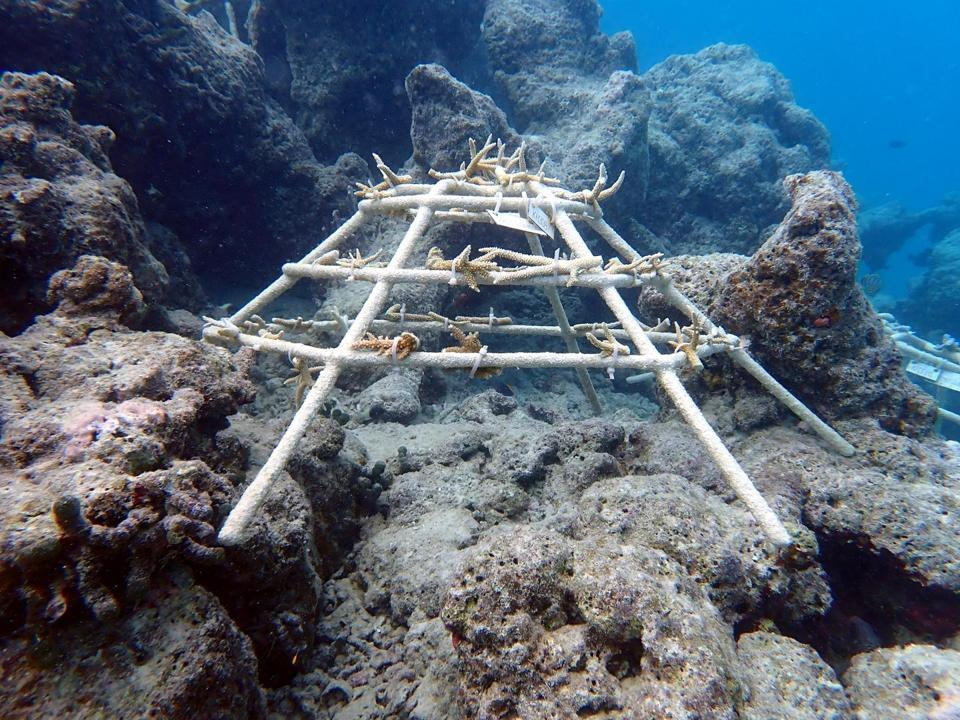
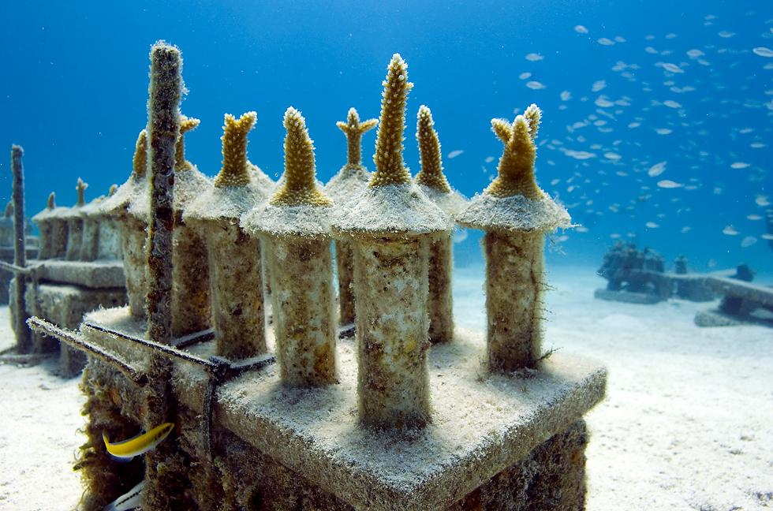
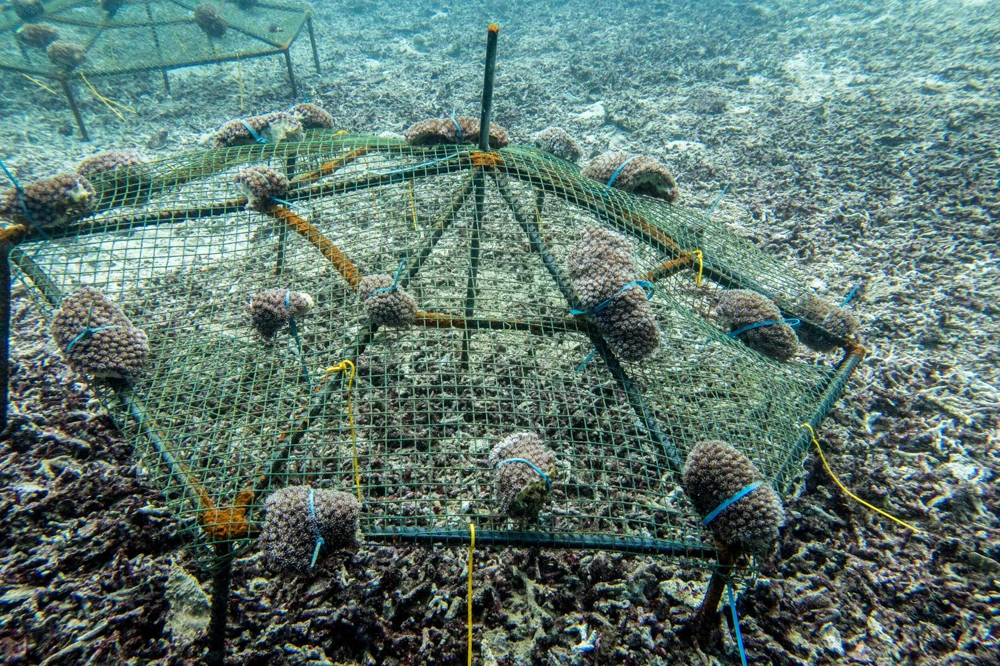
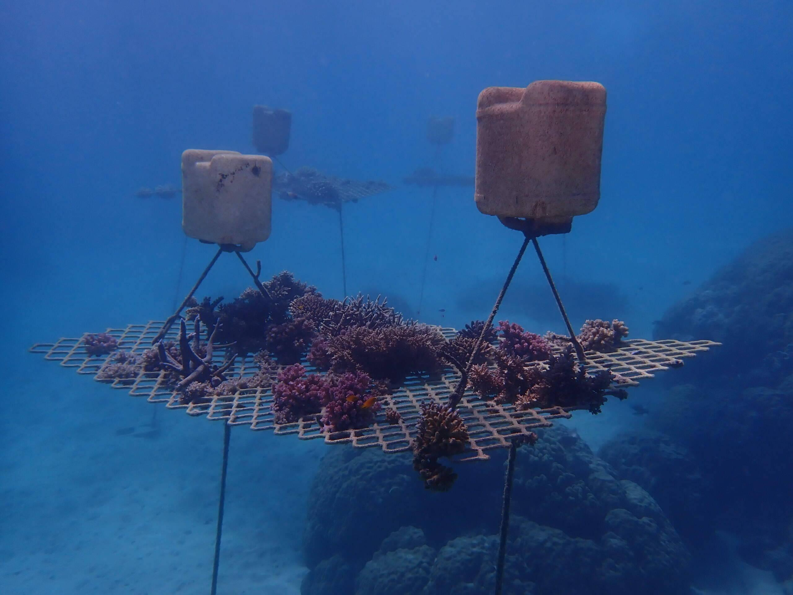

This is a hypothetical marine restoration and biomaterials project for portfolio and educational use. Coral-Suture has not been built, tested, or validated by me. The figures are reference visuals or concept placeholders. The numbered citations connect the text and captions to supporting literature, but the images are not experimental data from this project.
Coral-Suture is a reef-safe settlement scaffold: textured mineral geometry, local settlement cues, short-term microbial conditioning, and modular deployment all aimed at helping coral larvae attach and survive the first stage [1,2,3,4,5].
Coral reefs support habitat, coastlines, and biodiversity, but many reefs are being hit by heat stress, disease, sedimentation, physical damage, and weak recruitment [1,4]. Restoration teams already use coral gardening, nursery propagation, outplanting, larval reseeding, and artificial reef structures [1]. Coral-Suture focuses on the earliest weak point in that chain: getting larvae to settle and survive after they land.
The scaffold combines a calcium-carbonate-compatible substrate with millimeter-scale texture, small refuge cavities, crustose coralline algae-inspired settlement cues, and controlled microbial preconditioning. Surface texture and boundary-layer flow can change how larvae reach and remain near a surface, while reef-associated cues and microbes can affect recruitment and early coral health [2,3,4,5]. Coral-Suture does not claim to stop bleaching or rebuild reefs by itself. It is a support tool: give larvae a better surface, reduce early burial, and track whether juveniles survive under real field conditions. Since reef biofilms can change over time, the microbial layer is kept local, screened, and temporary instead of being treated like a permanent engineered organism. The main variables are material compatibility, larval behavior, flow, disease risk, and long-term monitoring.

The scaffold is mineral-compatible and shaped to borrow from reef skeleton architecture without becoming a sealed artificial surface. Candidate materials include calcium carbonate, aragonite-like ceramic, reef-safe terracotta, or another marine-stable substrate with settlement-friendly pH and dissolution behavior. Pores, ridges, shaded micro-cavities, and flow-exposed edges give larvae protected attachment spots while still allowing seawater exchange, sediment flushing, and later biological overgrowth. That matches the image: a modular restoration structure, not a permanent replacement for natural reef [1].

This part is about larval recruitment, not just dropping a block onto the seafloor. Millimeter-scale ridges and grooves are used to change near-surface flow, slow larvae near the substrate, and give them more time to settle [2,3]. The surface would also be conditioned with locally sourced, screened biofilm or crustose coralline algae-associated cues, since natural reef surfaces can guide coral larvae toward suitable settlement sites [4]. To avoid microbial drift, the cue layer would be site-matched, time-limited, and checked before deployment instead of being treated as a self-sustaining engineered biofilm.

Once larvae settle, the next problem is keeping juveniles alive. Young corals can be smothered by sediment, overgrown by algae, eaten, or stressed by heat [4]. Shallow recesses and raised contact points reduce direct burial while keeping the coral in moving water. The microbial layer is only a test variable, not a promised probiotic cure. It would be checked to see whether beneficial reef-associated communities reduce opportunistic colonization or improve early tissue stability [5]. If the community shifts toward algae-associated, pathogenic, or site-incompatible taxa, the module gets rejected or reconditioned before outplanting.

The scaffold stays modular on purpose. Units can be seeded in nurseries or placed during larval release events, then checked with diver surveys, photogrammetry, and survival scoring [1,6]. If a module shows heavy algal fouling, disease association, instability, poor settlement, or microbial drift, it can be pulled, cleaned, reconditioned, or redesigned before the idea is scaled.
Practical controls that keep the scaffold from becoming another reef problem:
Development pathway for validating the concept before open-reef deployment: